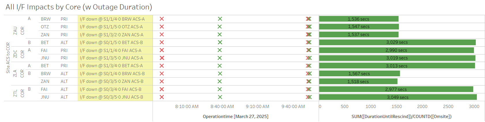
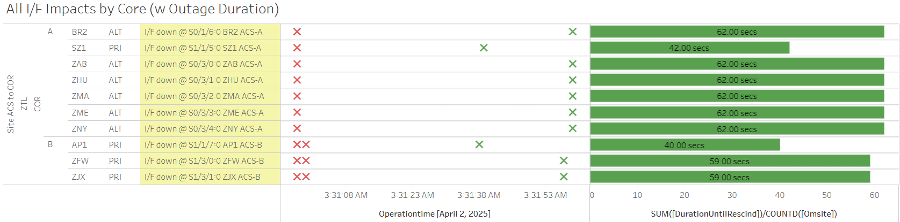

Weekly Highlights 20250326-20250402
3/31 - MMD WRE-A Control Powered / Failed to Reinit
- 3/31 16:34 - MMD WRE-A to Maintenance to address ongoing SE 30 Minor Alarm from Freq Std; Control Powered and unable to re-initialize... cycling in Maintenance... ref LIR 953873324
3/31 - MMD L1/L2 Bias Alert
- 3/31 16:48 - MMD L1/L2 Bias alarm
4/1-4/2 - BR2 Semi-Annual Maintenance
- 4/1 06:54 - GUS Switchover - G30
- AP1 to Primary / BR2 to Backup for
regular semi-annual RFU maintenance - 4/2 16:00 - BR2 GUS to Maintenance Mode for
4-hour maintenance outage to conduct our regular semi-annual RFU maintenance-- ref LIR 1015930732; restored to Backup at 4/2 20:15
4/2 - HNL WRE-C Fault
- 4/2 07:35 - HNL WRE-C Faulted with SEs 53,59
indicating Freq Std --
Alarm code F3 Ionizer Filament; Control Powered and restored to Normal at 4/2 09:00
Various Comm Impacts
* Only captures major / long-term comm outages
MX Comms
- 3/27 19:13 - MSD Ring 1 comms reconnected at ZTL COR-A (line down ~1wk 3d)
- 3/29 16:09 - MSD Ring 1 comms down hard; line cleared at 3/29 02:19 (~10h 9m)
- 4/2 03:12 - MX Ring 1 Ethernet to ZTL down for ~105 seconds
- 4/2 04:18 - MX Ring 1 Ethernet to ZTL down for ~102 seconds
CM1 Comms
- 3/26 16:57 - CM1 Ring 2 PRI comms flapping; line cleared at 3/26 22:46 (~2434 seconds total)
- 3/27 16:37 - CM1 Ring 2 PRI comms flapping; line cleared at 3/27 23:07 (~2627 seconds total)
- 3/31 16:19 - CM1 Ring 1 PRI comms flapping; last event cleared at 3/31 21:34 (~1083 seconds total)
- 4/1 17:26 - CM1 Ring 1 PRI comms flapping; last event cleared at 4/1 18:49 (~430 seconds total)
OTZ Comms
- 3/26 07:18 - OTZ Ring 1 comms flapping; line cleared at 3/27 02:20 (~17163 seconds total)
- 3/27 12:40 - OTZ Ring 1 PRI comms flapping; line cleared at 3/27 15:46 (~4873 seconds total)
- 3/27 22:53 - OTZ Ring 1 PRI comms down hard; line cleared at 3/27 23:24 (~1835 seconds)
- 3/27 23:32 - OTZ Ring 1 PRI comms down hard; line cleared at 3/28 01:33 (~7255 seconds)
- 3/28 07:03 - OTZ Ring 1 PRI comms flapping; last event cleared at 3/29 23:50 (~63571 seconds total)
- 4/1 07:11 - OTZ Ring 1 PRI comms down hard; came back up to flapping at 4/11 11:37; last event cleared at 4/1 14:55 (~16351 seconds total)
- 4/1 22:57 - OTZ Ring 1 PRI comms flapping; last event cleared at 4/1 23:55 (~313 seconds total)
- 4/2 07:02 - OTZ Ring 1 PRI comms down hard; line cleared at 4/2 11:40 (~16735 seconds)
- 4/2 11:47 - OTZ Ring 1 PRI comms down hard; line cleared at 4/2 11:52 (~249 seconds)
Other Sites
- 3/26 04:10 - YWG Ring 1 PRI / Ring 2 ALT + ZNY Ring 1 PRI / Ring 2 ALT comms down hard; all lines cleared at 3/26 (~2888 seconds)
- 3/27 05:04 - ZMP Ring 2 PRI comms down hard; line cleared at 3/27 05:15 (~673 seconds)
- 3/27 07:48 - Comm outage to multiple Alaska sites

- 3/27 12:41 - NOC Ring 1 OAC rebooted to attempt to clear red light indicator on router; since there are no Sig Events related to the NOC Ring 1 OAC, SLES recommended to ignore the indicator and run to fail
- 3/27 18:39 - YQX Ring 1 PRI comms down hard; line cleared at 3/27 19:14 (~2069 seconds)
- 3/29 05:24 - YQX Ring 1 PRI comms down hard; line cleared at 3/29 07:10 (~6406 seconds)
- 3/29 10:28 - BRW Ring 1 ALT / Ring 2 PRI comms down hard; both lines cleared at 3/29 12:19 (~1695 seconds)
- 3/29 19:28 - YFB Ring 1 Serial + YYR Ring 1 Serial comms flapping until down hard at 19:44; both lines cleared at 3/19 22:17 (~4804 seconds total)
- 3/30 01:23 - Brief ~20 second comm hit on the ZLA <-> ZTL COR-COR comms
- 3/30 17:17 - YFB Ring 1 Serial + YYR Ring 1 Serial comms flapping until down hard at 3/30 17:24; both lines cleared at 3/30 19:48 (~4399 seconds total)
- 3/30 20:28 - CDB Ring 1 comms flapping; last event cleared at 3/31 01:52 (~1287 seconds total)
- 4/2 03:30 - Comm hit at ZTL affecting multiple sites on both Cores for ~60 seconds

Mexico Ring 2 Down Hard...
- Targeting network upgrade in CY26
OTZ Ring 2 PRI / ALT
- 9/18/24 23:57 - OTZ Ring 1
ALT comms connected
after circuit validation
- Currently the wrong circuit (*508) is being used for OTZ Ring 2 PRI and *509 is connected on OTZ Ring 2 ALT
- Targeting week
of 4/28 to
troubleshoot
onsite at
ZLA and OTZ
- FTI support available at OTZ 4/29 18:00 UTC
List of current offline WREs
List of current offline WREs -- ref WAAS Status Monitor
All Depot shipments to Mexico are halted until the customs process can be finalized
- MMD WRE-A - 3/31/25-... - Freq Std failed -- ref LIR 953873324
- MTP WRE-B - 11/18/24-... - Receiver inits failing -- ref LIR 898330924
- MMX WRE-A - 10/13/24-... - Freq Std failed -- ref LAD 879853824
- MMX WRE-C - 5/15/24-... - Processor failed and could not be restored -- ref LIR 798352224
- MPR WRE-B - 5/3/24-... - Inits failing -- looks like a bad freq std; due to shipping issues, there is no spare Freq Std and no ETA to recover WRE-B... -- ref LIR 44170821
5/11/23-... - MX Ring 2 Satcom Upgrade
- 5/11/23 17:01 - MX Ring 2 SatCom upgrade begins; MX Ring 2 OFFLINE until upgrade troubleshooting is complete
All sites are currently connected through Tijuana with new cables; but still large UDP data packets (WAAS Multicast) being dropped on Ring 2 -- no further actions to take at Tijuana
- All MX Ring 2 currently down with no ETA...
-
WAAS Second Level assessing situation before further troubleshooting...

Major Events


Core I/F Status

Comm Events

Mexico Comm Status


Weekly Highlights 20250402-20250409
4/1-4/2 - BR2 Semi-Annual Maintenance
- 4/1 06:54 - GUS Switchover - G30
- AP1 to Primary / BR2 to Backup for
regular semi-annual RFU maintenance - 4/2 16:00 - BR2 GUS to Maintenance Mode for
4-hour maintenance outage to conduct our regular semi-annual RFU maintenance-- ref LIR 1015930732; restored to Backup at 4/2 20:15
4/2-4/9 - Bias Alarms
- 4/2 03:14 - MMD L1/L2 Bias alarm
- 4/2 05:53 - MTP WRE Bias alarm
- 4/2 18:12 - CDB L1/L2 Bias alarm
- 4/3 05:49 - MTP WRE Bias alarm
- 4/5 05:41 - MTP WRE Bias alarm
- 4/7 05:34 - MTP WRE Bias alarm
- 4/7 14:38 - MSD L1/L2 Bias alarm (ZDC / ZTL only)
- 4/8 04:57 - MPR L1/L2 Bias alarm + MSD L1/L2 Bias alarm on ZDC
4/2 - HNL WRE-C Fault
- 4/2 07:35 - HNL WRE-C Faulted with SEs 53,59
indicating Freq Std --
Alarm code F3 Ionizer Filament; Control Powered and restored to Normal at 4/2 09:00
4/3 - BR1 Intrusive Maintenance
- 4/3 07:58 - GUS Switchover - S15
- CM1 to Primary / BR1 to Backup for
intrustive preventative maint on KPA and antenna - 4/3 16:00 - BR1 to Maintenance Mode for
intrustive preventative maint on KPA and antenna-- ref LIR 954286024; restored to Backup at 4/3 19:42- While CM1 was Primary, S15 GEO went Don't Use at 4/3 20:41 (SE 772 - Signal Quality (SQM) PRN 133 for all C&Vs); recommended putting BR1 back to Primary ASAP
- 4/3 21:37 - GUS Switchover - S15 - BR1 to Primary / CM1 to Backup due to SE 772 received on C&Vs; SE 772 cleared for all C&Vs at 4/3 23:12
4/4 - SZ1 Maintenance
- 4/4 16:00 - SZ1 GUS to Maintenance Mode for
CM to turn ALC on-- LIR 960446124; restored to Backup at 4/4 18:11
4/6 - NOC RMD Filled Up
- 4/6 06:29 - NOC O&M RMD filled up; USB replaced 4/7 10:30
4/7 - RF Site Survey at ZFW
- 4/7 18:30 - ZFW WRE-C to Maintenance Mode for Second Level RF Site Survey activities...
4/8 - DX1 Intrusive Maintenance
- 4/7 08:15 - GUS Switchover - SM9
- SZ1 to Primary / DX1 to Backup
to facilitate PM intrusive maintenance - KPA Checks/Beacon RX INSP - 4/8 17:28 - DX1 to Maintenance for
KPA Checks/Beacon RX INSP-- ref LIR 957737024; restored to Backup at 4/8 19:42
4/9 - MSD Ring 1 Comm Troubleshooting
- 4/9 15:12 - MSD Ring 1 Comm Troubleshooting activity (includes some comm downs); last event cleared at 4/9 17:09 (~50 min total)
Various Comm Impacts
* Only captures major / long-term comm outages
MX Comms
- 4/2 03:12 - MX Ring 1 Ethernet to ZTL down for ~105 seconds
- 4/2 04:18 - MX Ring 1 Ethernet to ZTL down for ~102 seconds
- 4/3 00:23 - MSD Ring 1 comms down hard; line cleared at 4/3 18:52 (~18h 29m)
- 4/4 06:09 - MTP Ring 1 comms down hard; line cleared at 4/4 10:59 (~4h 49m)
- 4/6 18:39 - MSD Ring 1 comms down hard; line came back up to flapping at 4/7 07:49 (~13h 9m)...
- 4/7 04:04 - Brief ~20 second hit for MX Ring 1 Ethernet comms
- 4/7 15:39 - MTP / MPR / MSD Ring 1 comms down hard; all lines cleared at 4/7 22:42 (~7h 3m)
CM1 Comms
- 4/3 16:07 - CM1 Ring 2 PRI comms flapping; last event cleared at 4/3 22:05 (~1843 seconds total)
- 4/7 15:21 - CM1 Ring 1 PRI comms flapping; last event cleared at 4/7 20:42 (~1275 seconds total)
- 4/8 16:04 - CM1 Ring 2 PRI comms flapping; last event cleared at 4/8 22:19 (~3195 seconds total)
- 4/9 16:00 - CM1 Ring 2 PRI comms flapping...
OTZ Comms
- 4/2 07:02 - OTZ Ring 1 PRI comms down hard; line cleared at 4/2 11:40 (~16735 seconds)
- 4/2 11:47 - OTZ Ring 1 PRI comms down hard; line cleared at 4/2 11:52 (~249 seconds)
- 4/3 08:06 - OTZ Ring 1 comms down hard; line cleared at 4/3 08:16 (~633 seconds)
- 4/4 02:42 - OTZ Ring 1 PRI comms flapping; last event cleared at 4/4 03:18 (~342 seconds total)
- 4/4 16:45 - OTZ Ring 1 PRI comms flapping; last event cleared at 4/4 18:06 (~358 seconds total)
- 4/5 08:02 - OTZ Ring 1 PRI comms down hard; line cleared at 4/5 08:06 (~294 seconds total)
- 4/6 18:03 - OTZ Ring 1 PRI comms flapping; last event cleared at 4/6 18:16 (~405 seconds total)
- 4/7 01:48 - OTZ Ring 1 PRI comms flapping; last event cleared at 4/7 02:12 (~196 seconds total)
- 4/8 07:02 - OTZ Ring 1 PRI comms down hard; line came back up to flapping at 4/8 12:27; last event cleared at 4/8 12:48 (~19942 seconds total)
- 4/8 15:45 - OTZ Ring 1 PRI comms down hard; line cleared at 4/8 15:50 (~320 seconds)
- 4/9 07:17 - OTZ Ring 1 PRI comms down hard; line came back up to flapping at 4/9 11:17; last event cleared at 4/9 11:21 (~14480 seconds total)
ZSU Comms
- 4/6 09:13 - ZSU Ring 1 PRI / Ring 2 ALT comms flapping; last event cleared at 4/7 04:50 (~27672 seconds total)
- 4/8 08:44 - ZSU Ring 1 PRI / Ring 2 ALT comms down hard; both lines cleared at 4/8 08:57 (~746 seconds total)
- 4/8 14:17 - ZSU Ring 1 PRI / Ring 2 ALT comms down hard; loopback tests; both lines cleared at 4/8 20:43 (~23157 seconds)
- 4/9 04:26 - ZSU Ring 1 PRI / Ring 2 ALT comms down hard; both lines cleared at 4/9 04:41 (~925 seconds)
- 4/9 05:00 - ZSU Ring 1 PRI / Ring 2 ALT comms flapped then down hard; both lines cleared at 4/9 05:09 (~402 seconds)
Other Sites
- 4/2 03:30 - Comm hit at ZTL affecting multiple sites on both Cores for ~60 seconds
- 4/2 06:02 - ZAB Ring 1 ALT comms down hard; line cleared at 4/2 06:23 (~1275 seconds)
- 4/3 05:39 - ZDV Ring 1 ALT / Ring 2 PRI comms down hard; both lines cleared at 4/3 06:21 (~2494 seconds)
- 4/8 14:19 - POC<->ZLA comms took a ~20 second hit
- 4/9 16:23 - JNU Ring 1 PRI + BR2 Ring 2 ALT comms down hard then looped; both lines cleared at 4/9 16:25 (~228 seconds)
Mexico Ring 2 Down Hard...
- Targeting network upgrade in CY26
OTZ Ring 2 PRI / ALT
- 9/18/24 23:57 - OTZ Ring 1
ALT comms connected
after circuit validation
- Currently the wrong circuit (*508) is being used for OTZ Ring 2 PRI and *509 is connected on OTZ Ring 2 ALT
- Targeting week
of 4/28 to
troubleshoot
onsite at
ZLA and OTZ
- FTI support available at OTZ 4/29 18:00 UTC
List of current offline WREs
List of current offline WREs -- ref WAAS Status Monitor
All Depot shipments to Mexico are halted until the customs process can be finalized
- MMD WRE-A - 3/31/25-... - Freq Std failed -- ref LIR 953873324
- MTP WRE-B - 11/18/24-... - Receiver inits failing -- ref LIR 898330924
- MMX WRE-A - 10/13/24-... - Freq Std failed -- ref LAD 879853824
- MMX WRE-C - 5/15/24-... - Processor failed and could not be restored -- ref LIR 798352224
- MPR WRE-B - 5/3/24-... - Inits failing -- looks like a bad freq std; due to shipping issues, there is no spare Freq Std and no ETA to recover WRE-B... -- ref LIR 44170821
5/11/23-... - MX Ring 2 Satcom Upgrade
- 5/11/23 17:01 - MX Ring 2 SatCom upgrade begins; MX Ring 2 OFFLINE until upgrade troubleshooting is complete
All sites are currently connected through Tijuana with new cables; but still large UDP data packets (WAAS Multicast) being dropped on Ring 2 -- no further actions to take at Tijuana
- All MX Ring 2 currently down with no ETA...
-
WAAS Second Level assessing situation before further troubleshooting...

Major Events


Core I/F Status

Comm Events

Mexico Comm Status